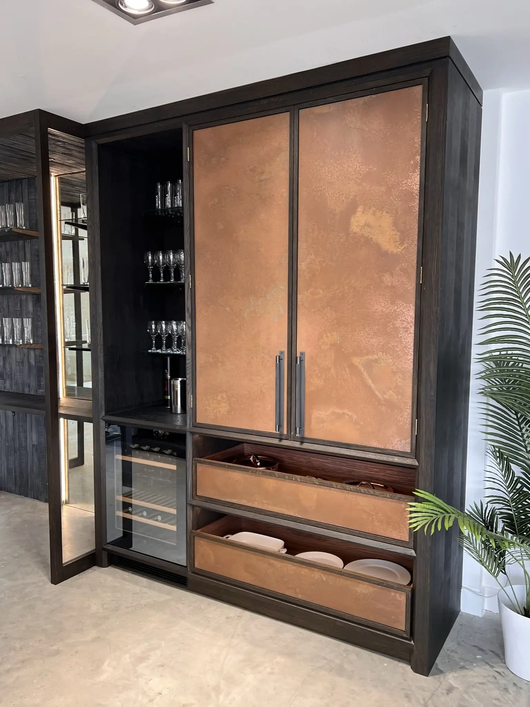

Our aged Copper sheets create a stunning look for any living space. Our gloss lacquered products are ideal when used for decorative and design purposes and every order is handcrafted for a bespoke design. We run every sheet through an oxidization process which causes the copper to develop multiple patina tones such as turquoise greens and deep copper colours that can be highlighted by surrounding lighting.
Choose a finish



Cut to size
Each of our bespoke finishes can be purchased in sheets cut to your size, perfect for your project.
- Pricing includes delivery and turnaround time is 5-8 weeks
- Each piece is coated in a gloss finish lacquer that prevents the sheet from further aging
Ready to go
We can provide bespoke cut metal with each of our finishes being wrapped around wood and lacquer finished. Get in touch for a bespoke quote . If you’re a business please use our Bespoke Quote for Businesses form .
Copper Sheets with Patina
After accelerating the natural ageing and antiquing process of our copper sheets we typically finish our work using a gloss lacquer.
Not only does this create a brilliant finish but it prevents further ageing of the metal therefore preserving the look and design created.
Should the lacquer come off through cleaning, washing, excess heat etc the patina will change and continue to develop. As ‘live’ metals, direct contact with acidic liquids like vinegar, sauce, and fruit juices, will accelerate this reaction and the look of the product will change.
Our gloss lacquered products are ideal when used for decorative and design purposes. They are a great way to add a unique touch to your home as a splashback, feature wall, piece of wall art or anything you can imagine!
BESPOKE SERVICE
All of our aged products are made to order. This means you can work with our artists through the ageing process to get just the look you are aiming for. Start by choosing a finish.
FINISHES
Choose the finish that’s perfect for your home:
- Cheshire Finish – Aged copper with rich dark tones of brown and red.
- Hertfordshire Finish – Vivid blues and greens coming together in a stainglass effect.
- Northumberland Finish – Marbled aged copper with standout blues, greens and teals.
- Oxfordshire Finish – A unique finish, a metallic version of a wood aesthetic.
CARING FOR YOUR AGED COPPER
Use warm soapy water only with microfibre cloths. It’s as simple as that.
Heat: Always use mats when setting down hot plates and cups.
Find out more with our aged metal care guide .
Check out some of our recent projects:


If you can dream it, we’ll make it.
Bars, balustrades, staircases, worktops, cladding and pieces that don’t have a name yet. Our designers and craftspeople work in brass, copper, zinc and steel, and alongside wood.